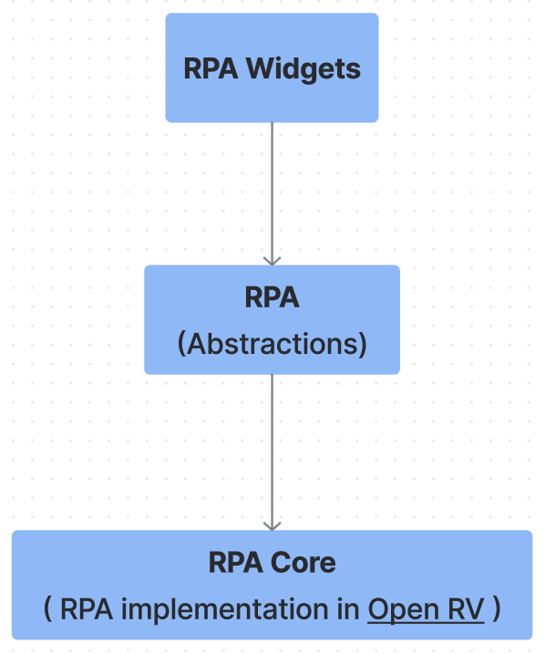
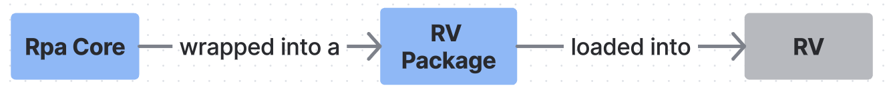
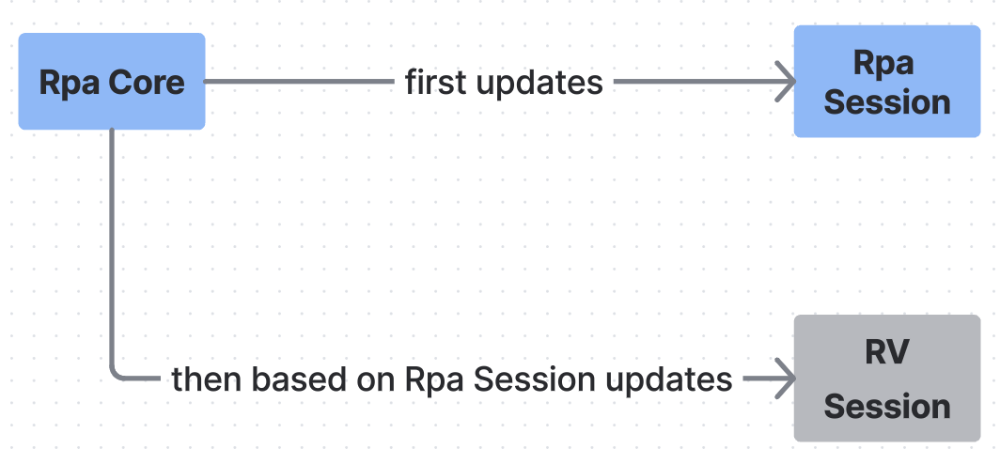
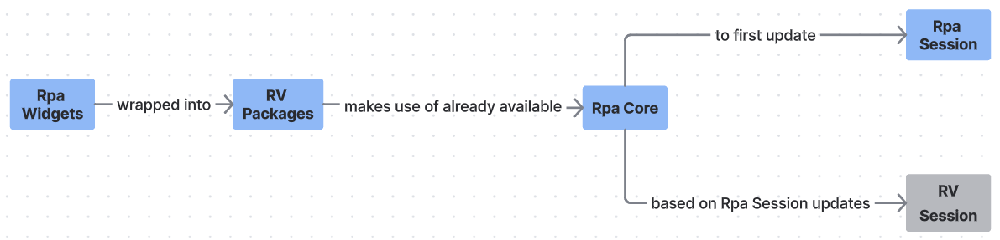

Open RV Implmentation¶
Overview¶
RPA implementation in Open RV has been done using the following 2 RV Packages that you can find in the RPA repo,
./open_rv/pkgs/rpa_core_pkg/rpa_core_mode.py
./open_rv/pkgs/rpa_widgets_pkg/rpa_widgets_mode.py
RPA Core - Rv Package¶
In the RPA repository, the RV Package responsible for adding RPA Core into RV can be found at: ./open_rv/pkgs/rpa_core_pkg/rpa_core_mode.py
At its core, RPA is a collection of abstractions designed to support the development of RPA-widgets that support review-workflows in VFX & Animation studios. These widgets rely on the RPA abstractions for their functionality.
To make practical use of these widgets, they must be run inside a review player that provides an actual implementation of the RPA abstractions. We refer to this implementation as the RPA Core.
{kind=link}
In the context of RV, all RPA abstractions across various RPA modules are implemented as an RV Package.
The implementation is designed such that the RPA session is treated as the source of truth, not the RV session. This means updates flow from the RPA session to the RV session: the RPA session is updated first, and the RV session is then synchronized based on the state of the RPA session.
The RPA Core instance is attached to QtWidgets.QApplication instance of Open RV.
app = QtWidgets.QApplication.instance()
app.rpa_core = self.__rpa_core
This is done so that subsequent RV packages that have RPA widgets, can get the RPA Core instance from the QtWidgets.QApplication instance.
RPA Widgets - Rv Package¶
In the RPA repository, the RV Package responsible for adding all available RPA widgets into RV can be found at: ./open_rv/pkgs/rpa_widgets_pkg/rpa_widgets_mode.py
To use RPA widgets within RV, two key components are required:
An instance of RPA with the RPA Core added as a core delegate.
The MainWindow instance used by the review player (RV).
In the file mentioned above, you will see how:
An RPA instance is created. RV’s implementation of the RPA Core is added to it as the core delegate.
The MainWindow is obtained from RV using rv.qtutils.sessionWindow()
from rpa.rpa import Rpa
...
self.__main_window = rv.qtutils.sessionWindow()
app = QtWidgets.QApplication.instance()
self.__rpa_core = app.rpa_core
self.__rpa = Rpa(create_config(self.__main_window), create_logger())
default_connection_maker.set_core_delegates_for_all_rpa(
self.__rpa, self.__rpa_core)
Next, instances of the desired RPA widgets are created by passing:
The RPA instance, and
RV’s MainWindow.
from rpa.widgets.session_manager.session_manager import SessionManager
...
self.__session_manager = SessionManager(self.__rpa, self.__main_window)
These widgets are then integrated into RV using the RV Package mechanism to define new menus and keyboard shortcuts for showing and hiding them.
That’s it, you now have fully functional RPA Review Sessions running directly inside RV.
How to build and install the above RPA RV Packages ?¶
Instructions to build and install the above RPA RV Packages is found under this directory of the RPA repo, ./build_scripts/